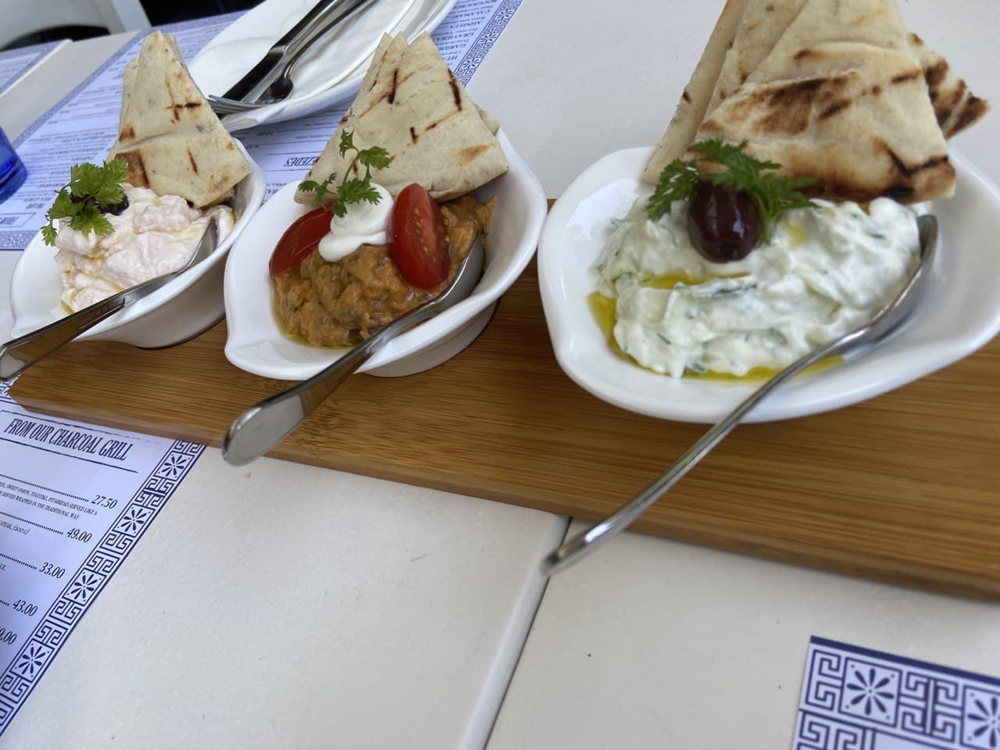
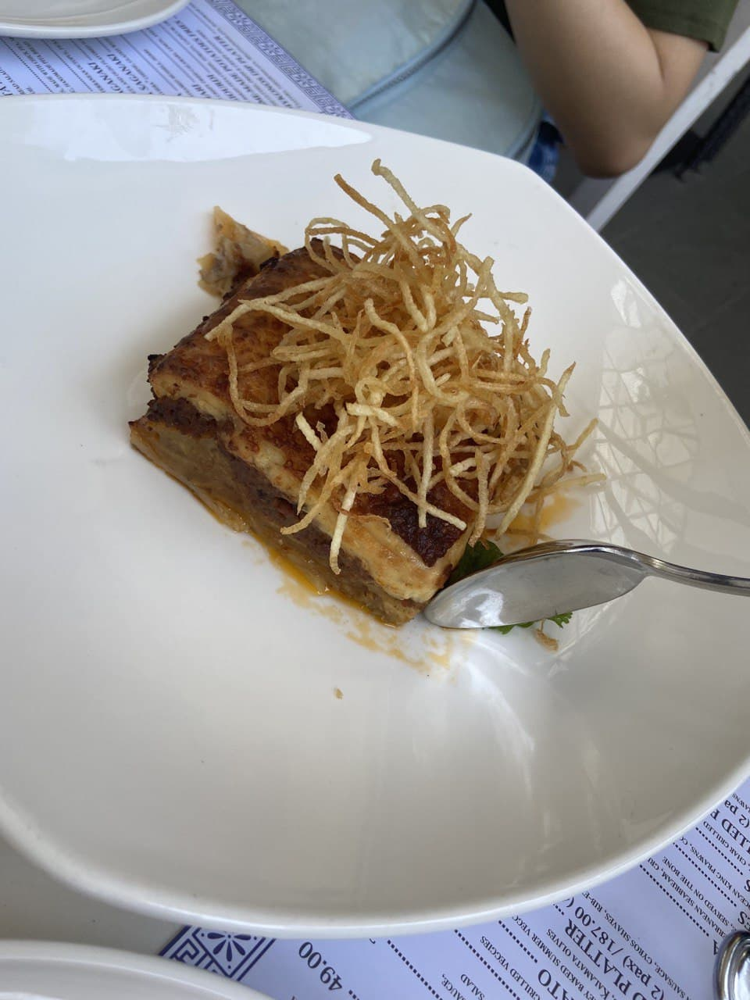
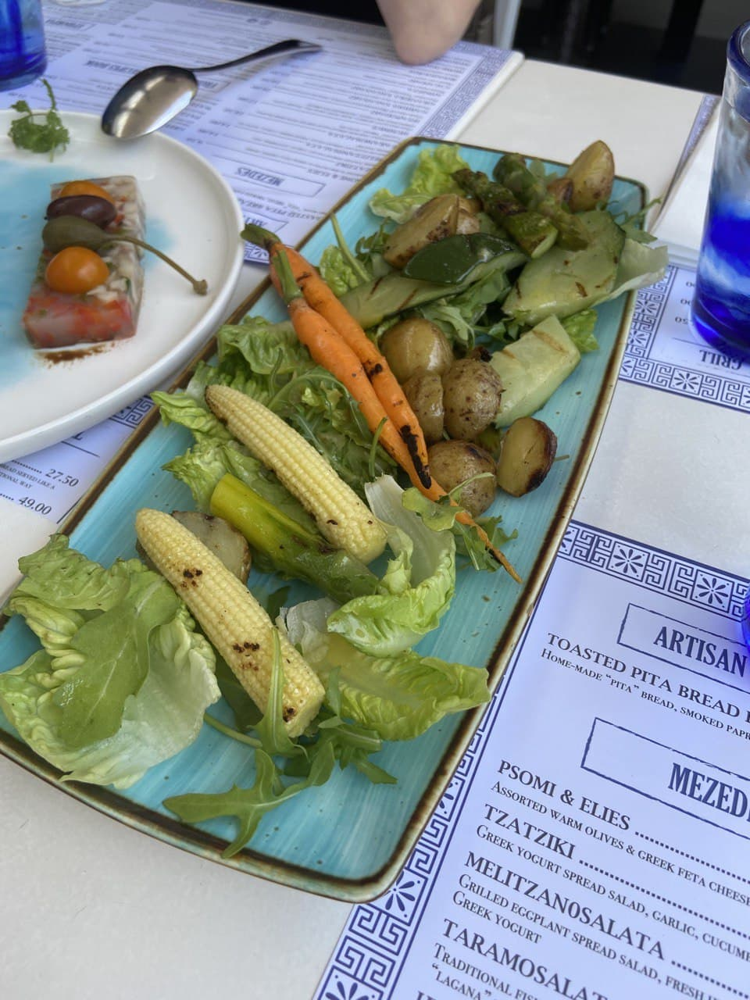
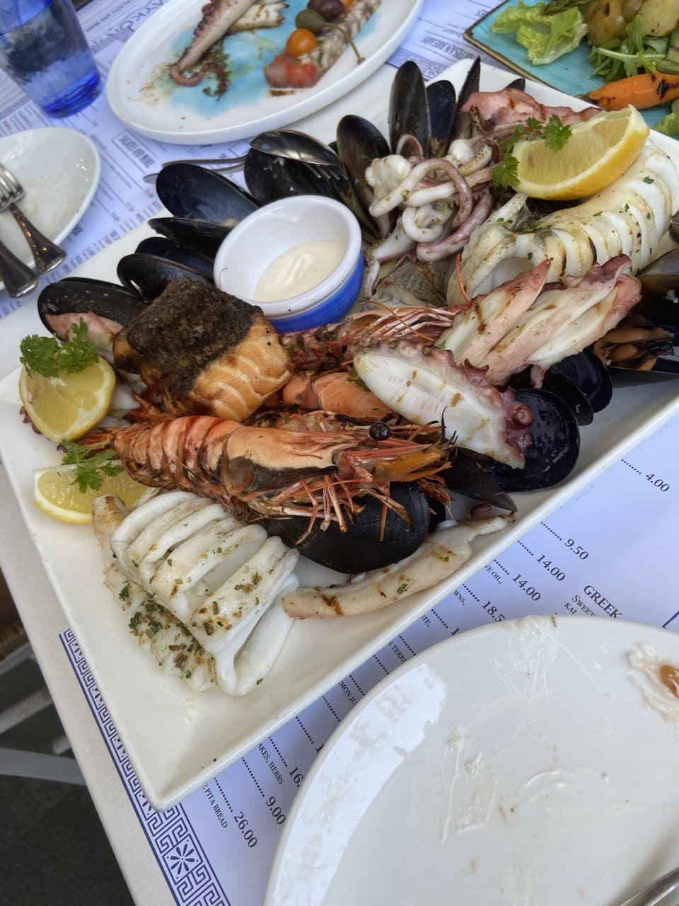
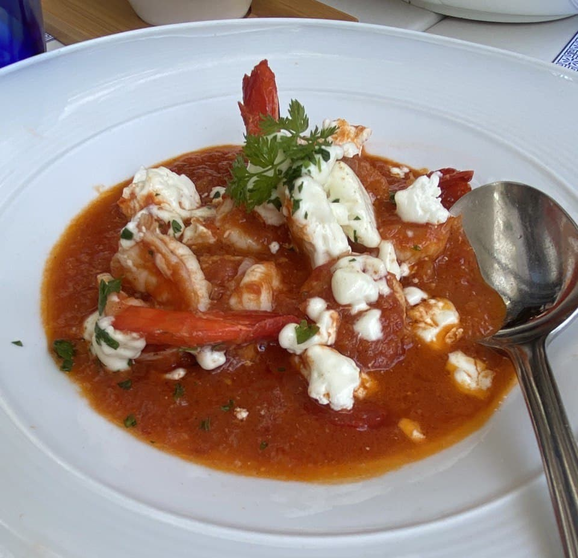
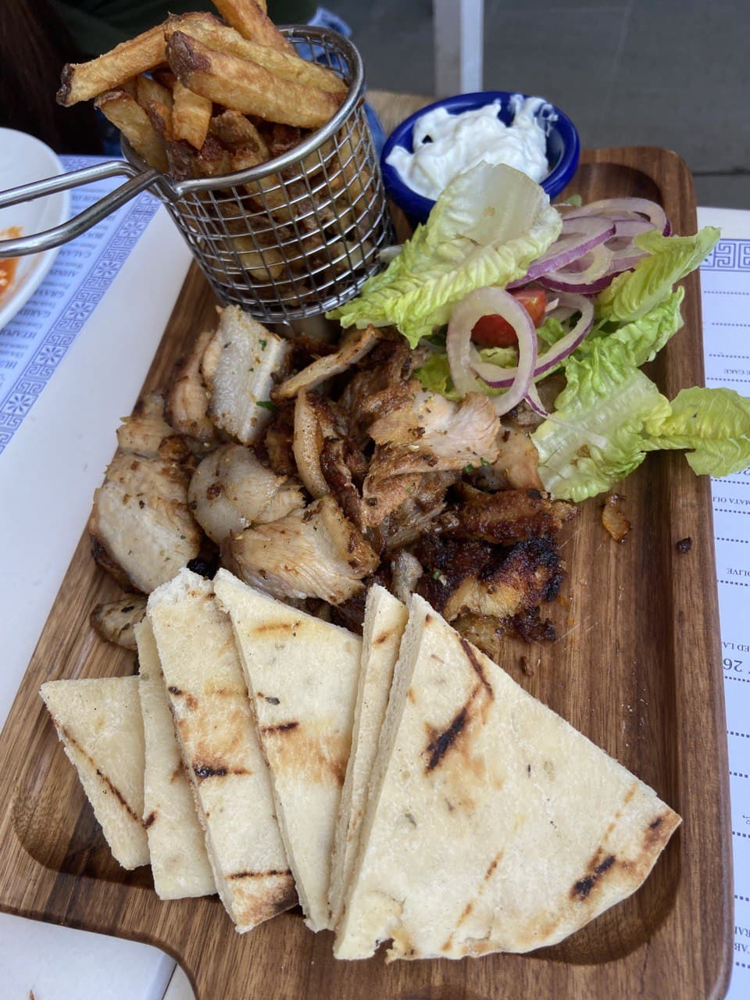
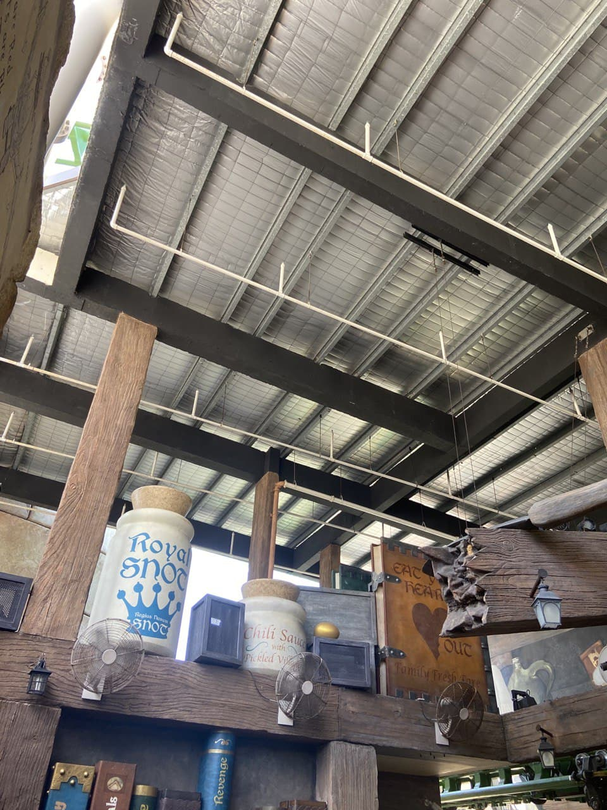
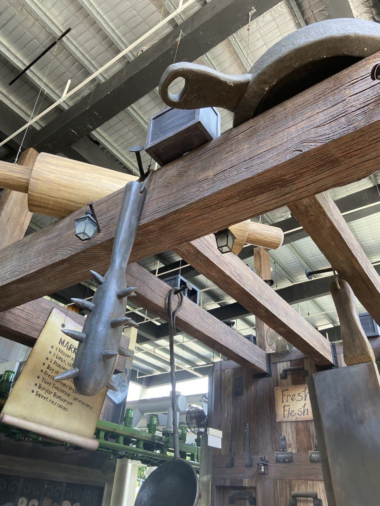
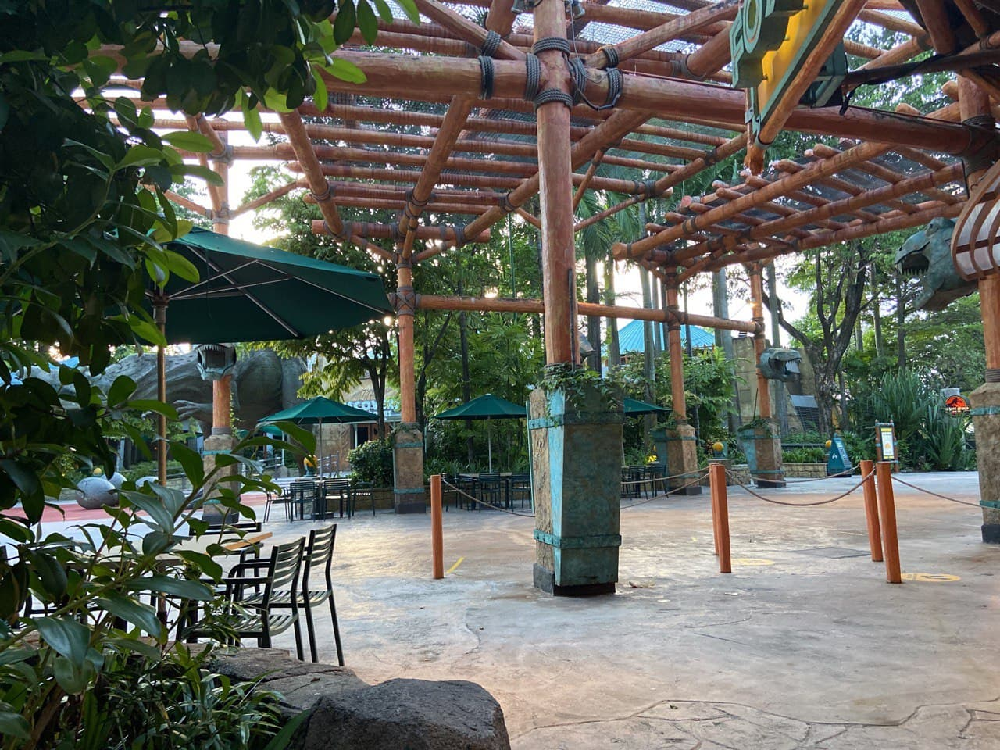
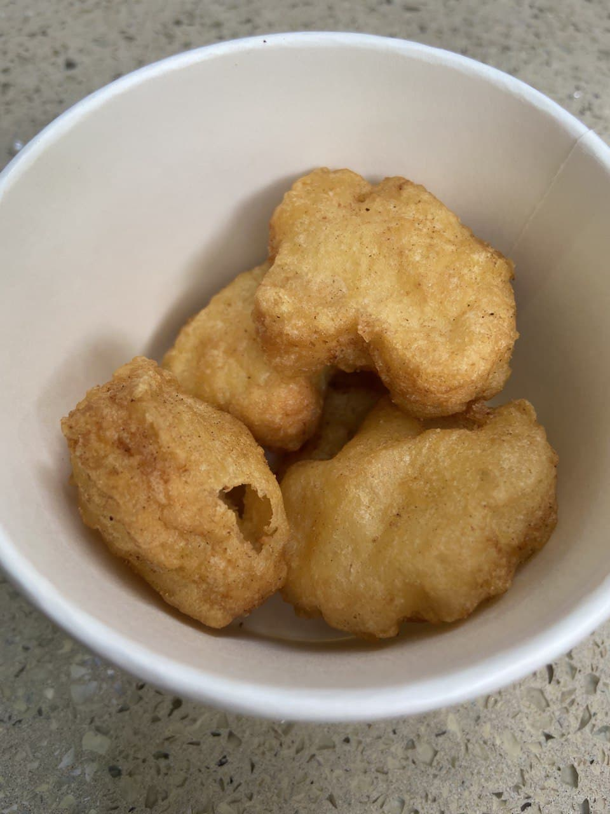

25 Apr 2021
Lunch
Today is team outing day. The doctors treated us to Greek food at a restaurant called Mykonos By The Bay . The restraurant was situated in Sentosa Cove, so naturally, the foods were overpriced. The grilled squid tasted rather decent. Other than that, can't really think of anything spectacular about this restaurant. We talked about pets, boyfriends, and foods.
Towards the end of the meal, a worm crawled out from under the salad plate. Charmained was visibly shaken haha.
I had a decent portion of grilled squid, bite-sized fish, moussaka, salmon, prawn, mussel and pita bread. I drank a ton of water to feel full. Ana was probably lurking around and restraining my mind, I suppose. These days, she seems to coming back. (Should I be worried ?) 






The sun was meltingly-hot. The amusement rides were ... okay... I suppose.



Dinner
Dinner was 6 pieces of chicken nuggets, which tasted disappointingly dry and rubbery. I had to forced them down my throat because I didn't want to alienate myself too much by not eating anything. Slugged down some coke Slushy as well. For all the fancy name, it turned out to be just frozen coke. Our conversation was slighly more interesting this time round. They told a few stories about family rife.

Conclusion
I was really grateful to Charmaine today. She held onto my hands and walked with me for the entire day, probably out of kindness.  She didn't want me to feel lonely and left out, I guess. It is okay to be a quiet person. There are nice people in this world who cares, and tries to make you feel better. Remember their kindness. Be a kind person.
She didn't want me to feel lonely and left out, I guess. It is okay to be a quiet person. There are nice people in this world who cares, and tries to make you feel better. Remember their kindness. Be a kind person.